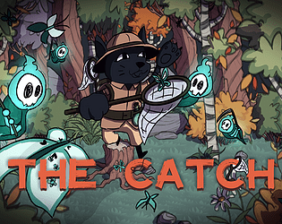
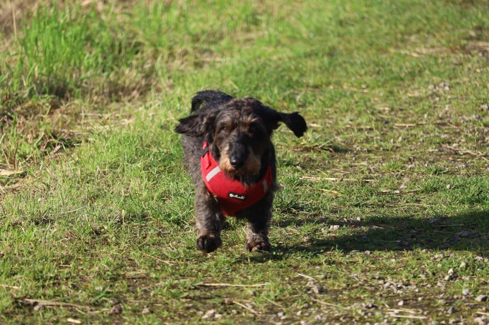

Over mij
Ik ben Michiel Hijweege en ben 21 jaar oud.
Ik volg de opleiding CMGT op de Hogeschool Rotterdam.
Hiervoor heb ik op het GLR de opleiding gamedeveloper afgerond.
Ik heb dus al drie jaar ervaring met verschillende programmeertalen.
Skills
Mijn skills zijn als volgt:- PHP
- HTML/CSS
- C#
- JavaScript
In mijn vrijetijd speel ik videogames.
De videogames die ik speel zijn heel verschillend van shooters tot strategy.
Op dit moment zijn mijn top vier games als volg:

Payday 2

Terraria

Sid Meier’s Civilization® VI

Satisfactory
Verder maak ik zelf ook videogames en websites in mijn vrije tijd.
Laatst heb ik nog meegedaan aan een game jam.
Een game jam is een event waar je voor kan aanmelden.
Alle deelnemers hebben een week de tijd om een spelletje te maken binnen hetzelfde thema.

Buiten alle digitale hobby's loop en speel ik ook met mijn hond.
